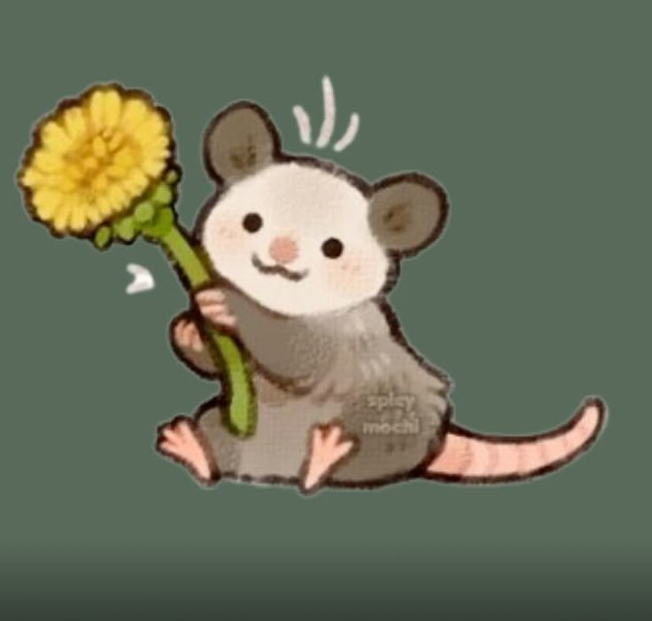
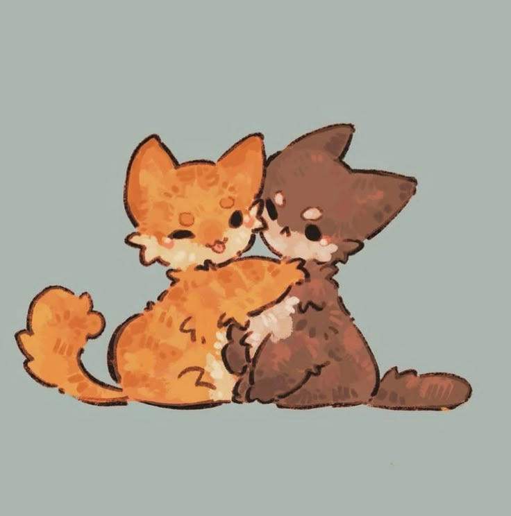
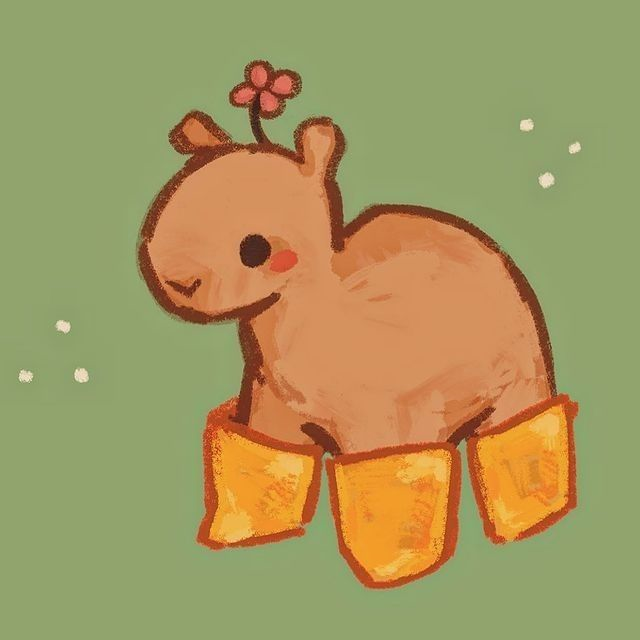
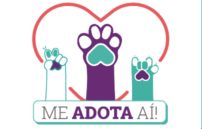

Área de Adoção: Um cantinho cheio de esperança
Criamos um espaço calmo e acolhedor dentro do Fluttershy Petshop para que os animaizinhos resgatados tenham um lugar seguro enquanto esperam por uma nova família. É cheio de mantinhas, brinquedinhos e muito carinho. Você pode vir conhecer, sentar com eles e sentir o coração bater mais forte...
Gambá Lua
Lua chegou tímida, mas com paciência se mostrou um amorzinho. Esse gambazinho dorminhoco ama se esconder em cobertores e beliscar frutas. Está castrado, saudável e pronto pra um lar tranquilo e cheio de afeto. Pode parecer diferente... mas seu jeitinho meigo é simplesmente encantador..
Irmãos Gatinhos
Esses dois irmãos felinos foram encontrados juntinhos e assim querem permanecer. Miau é curioso e adora brincar com bolinhas. Mia é mais tranquila e adora colo. Juntos formam a dupla perfeita: ronronam em sincronia e dormem abraçadinhos. Estão vacinados, castrados e cheios de amor pra dar!
Capivara Clarinha
Clarinha é uma capivara muito calma e educada. Ela adora banhos de sol, frutas fresquinhas e cochilos na sombra. Se dá bem com outros animais e ama cafuné atrás da orelha. Está esperando uma família que a aceite do jeitinho que ela é: gigante no tamanho e no amor.
Nossos amigos de patas e coração - Conheça as ONGs parceiras
Trabalhamos lado a lado com ONGs que fazem um trabalho lindo, como a Pelos e Penas e o Santuário da Paz Animal. São pessoas tão gentis quanto os animaizinhos que ajudam. Juntos, promovemos feiras de adoção e campanhas de castração. Toda ajuda conta... mesmo a menorzinha faz diferença!
